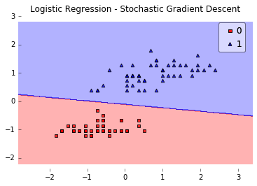
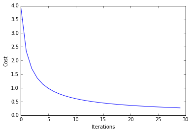
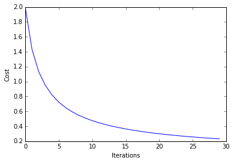

Logistic Regression
A logistic regression class for binary classification tasks.
from mlxtend.classifier import LogisticRegression
Overview

Related to the Perceptron and 'Adaline', a Logistic Regression model is a linear model for binary classification. However, instead of minimizing a linear cost function such as the sum of squared errors (SSE) in Adaline, we minimize a sigmoid function, i.e., the logistic function:
where
The net input is in turn based on the logit function
Here,

After model fitting, the conditional probability
or equivalently:
Objective Function -- Log-Likelihood
In order to parameterize a logistic regression model, we maximize the likelihood
We write the likelihood as
under the assumption that the training samples are independent of each other.
In practice, it is easier to maximize the (natural) log of this equation, which is called the log-likelihood function:
One advantage of taking the log is to avoid numeric underflow (and challenges with floating point math) for very small likelihoods. Another advantage is that we can obtain the derivative more easily, using the addition trick to rewrite the product of factors as a summation term, which we can then maximize using optimization algorithms such as gradient ascent.
Objective Function -- Logistic Cost Function
An alternative to maximizing the log-likelihood, we can define a cost function

As we can see in the figure above, we penalize wrong predictions with an increasingly larger cost.
Gradient Descent (GD) and Stochastic Gradient Descent (SGD) Optimization
Gradient Ascent and the log-likelihood
To learn the weight coefficient of a logistic regression model via gradient-based optimization, we compute the partial derivative of the log-likelihood function -- w.r.t. the jth weight -- as follows:
As an intermediate step, we compute the partial derivative of the sigmoid function, which will come in handy later:
\begin{align} &\frac{\partial}{\partial z} \phi(z) = \frac{\partial}{{\partial z}} \frac{1}{1+e^{-z}} \\ &= \frac{1}{(1 + e^{-z})^{2}} e^{-z}\\ &= \frac{1}{1+e^{-z}} \bigg(1 - \frac{1}{1+e^{-z}} \bigg)\\ &= \phi(z)\big(1-\phi(z)\big) \end{align}
Now, we re-substitute
\begin{align} & \bigg(y \frac{1}{\phi{(z)}} - (1 - y) \frac{1}{1 - \phi(z)} \bigg) \frac{\partial}{\partial w_j} \phi(z) \\ &= \bigg(y \frac{1}{\phi{(z)}} - (1 - y) \frac{1}{1 - \phi(z)} \bigg) \phi(z) \big(1 - \phi(z)\big) \frac{\partial}{\partial w_j}z\\ &= \big(y(1-\phi(z)\big) - (1 - y) \phi(z)\big)x_j\\ &=\big(y - \phi(z)\big)x_j \end{align}
Now, in order to find the weights of the model, we take a step proportional to the positive direction of the gradient to maximize the log-likelihood. Futhermore, we add a coefficient, the learning rate
\begin{align} & w_j := w_j + \eta \frac{\partial}{\partial w_j} l(\mathbf{w})\\ & w_j := w_j + \eta \sum^{n}_{i=1} \big( y^{(i)} - \phi\big(z^{(i)}\big)\big)x_j^{(i)} \end{align}
Note that the gradient (and weight update) is computed from all samples in the training set in gradient ascent/descent in contrast to stochastic gradient ascent/descent. For more information about the differences between gradient descent and stochastic gradient descent, please see the related article Gradient Descent and Stochastic Gradient Descent.
The previous equation shows the weight update for a single weight
Gradient Descent and the logistic cost function
In the previous section, we derived the gradient of the log-likelihood function, which can be optimized via gradient ascent. Similarly, we can obtain the cost gradient of the logistic cost function
The update rule for a single weight:
\begin{align} & \Delta{w_j} = -\eta \frac{\partial J}{\partial w_j} \ & = - \eta \sum_{i=1}^{n}\big(y^{(i)} - \phi\big(z^{(i)}\big) x^{(i)} \big) \end{align}
The simultaneous weight update:
where
Shuffling
Random shuffling is implemented as:
- for one or more epochs
- randomly shuffle samples in the training set
- for training sample i
- compute gradients and perform weight updates
- for training sample i
- randomly shuffle samples in the training set
Regularization
As a way to tackle overfitting, we can add additional bias to the logistic regression model via a regularization terms. Via the L2 regularization term, we reduce the complexity of the model by penalizing large weight coefficients:
In order to apply regularization, we just need to add the regularization term to the cost function that we defined for logistic regression to shrink the weights:
The update rule for a single weight:
\begin{align} & \Delta{w_j} = -\eta \bigg( \frac{\partial J}{\partial w_j} + \lambda w_j\bigg)\ & = - \eta \sum_{i=1}^{n}\big(y^{(i)} - \phi\big(z^{(i)}\big) x^{(i)} \big) - \eta \lambda w_j \end{align}
The simultaneous weight update:
where
For more information on regularization, please see Regularization of Generalized Linear Models.
References
- Bishop, Christopher M. Pattern recognition and machine learning. Springer, 2006. pp. 203-213
Examples
Example 1 - Gradient Descent
from mlxtend.data import iris_data
from mlxtend.evaluate import plot_decision_regions
from mlxtend.classifier import LogisticRegression
import matplotlib.pyplot as plt
# Loading Data
X, y = iris_data()
X = X[:, [0, 3]] # sepal length and petal width
X = X[0:100] # class 0 and class 1
y = y[0:100] # class 0 and class 1
# standardize
X[:,0] = (X[:,0] - X[:,0].mean()) / X[:,0].std()
X[:,1] = (X[:,1] - X[:,1].mean()) / X[:,1].std()
lr = LogisticRegression(eta=0.1,
l2_lambda=0.0,
epochs=100,
minibatches=1, # for Gradient Descent
random_seed=1,
print_progress=3)
lr.fit(X, y)
plot_decision_regions(X, y, clf=lr)
plt.title('Logistic Regression - Gradient Descent')
plt.show()
plt.plot(range(len(lr.cost_)), lr.cost_)
plt.xlabel('Iterations')
plt.ylabel('Cost')
plt.show()
Iteration: 100/100 | Cost 0.32 | Elapsed: 0:00:00 | ETA: 0:00:00


Predicting Class Labels
y_pred = lr.predict(X)
print('Last 3 Class Labels: %s' % y_pred[-3:])
Last 3 Class Labels: [1 1 1]
Predicting Class Probabilities
y_pred = lr.predict_proba(X)
print('Last 3 Class Labels: %s' % y_pred[-3:])
Last 3 Class Labels: [ 0.99997968 0.99339873 0.99992707]
Example 2 - Stochastic Gradient Descent
from mlxtend.data import iris_data
from mlxtend.evaluate import plot_decision_regions
from mlxtend.classifier import LogisticRegression
import matplotlib.pyplot as plt
# Loading Data
X, y = iris_data()
X = X[:, [0, 3]] # sepal length and petal width
X = X[0:100] # class 0 and class 1
y = y[0:100] # class 0 and class 1
# standardize
X[:,0] = (X[:,0] - X[:,0].mean()) / X[:,0].std()
X[:,1] = (X[:,1] - X[:,1].mean()) / X[:,1].std()
lr = LogisticRegression(eta=0.5,
epochs=30,
l2_lambda=0.0,
minibatches=len(y), # for SGD learning
random_seed=1,
print_progress=3)
lr.fit(X, y)
plot_decision_regions(X, y, clf=lr)
plt.title('Logistic Regression - Stochastic Gradient Descent')
plt.show()
plt.plot(range(len(lr.cost_)), lr.cost_)
plt.xlabel('Iterations')
plt.ylabel('Cost')
plt.show()
Iteration: 30/30 | Cost 0.27 | Elapsed: 0:00:00 | ETA: 0:00:00


Example 3 - Stochastic Gradient Descent w. Minibatches
Here, we set minibatches to 5, which will result in Minibatch Learning with a batch size of 20 samples (since 100 Iris samples divided by 5 minibatches equals 20).
from mlxtend.data import iris_data
from mlxtend.evaluate import plot_decision_regions
from mlxtend.classifier import LogisticRegression
import matplotlib.pyplot as plt
# Loading Data
X, y = iris_data()
X = X[:, [0, 3]] # sepal length and petal width
X = X[0:100] # class 0 and class 1
y = y[0:100] # class 0 and class 1
# standardize
X[:,0] = (X[:,0] - X[:,0].mean()) / X[:,0].std()
X[:,1] = (X[:,1] - X[:,1].mean()) / X[:,1].std()
lr = LogisticRegression(eta=0.5,
epochs=30,
l2_lambda=0.0,
minibatches=5, # 100/5 = 20 -> minibatch-s
random_seed=1,
print_progress=3)
lr.fit(X, y)
plot_decision_regions(X, y, clf=lr)
plt.title('Logistic Regression - Stochastic Gradient Descent')
plt.show()
plt.plot(range(len(lr.cost_)), lr.cost_)
plt.xlabel('Iterations')
plt.ylabel('Cost')
plt.show()
Iteration: 30/30 | Cost 0.25 | Elapsed: 0:00:00 | ETA: 0:00:00


API
LogisticRegression(eta=0.01, epochs=50, l2_lambda=0.0, minibatches=1, random_seed=None, print_progress=0)
Logistic regression classifier.
Note that this implementation of Logistic Regression
expects binary class labels in {0, 1}.
Parameters
-
eta: float (default: 0.01)Learning rate (between 0.0 and 1.0)
-
epochs: int (default: 50)Passes over the training dataset. Prior to each epoch, the dataset is shuffled if
minibatches > 1to prevent cycles in stochastic gradient descent. -
l2_lambda: floatRegularization parameter for L2 regularization. No regularization if l2_lambda=0.0.
-
minibatches: int (default: 1)The number of minibatches for gradient-based optimization. If 1: Gradient Descent learning If len(y): Stochastic Gradient Descent (SGD) online learning If 1 < minibatches < len(y): SGD Minibatch learning
-
random_seed: int (default: None)Set random state for shuffling and initializing the weights.
-
print_progress: int (default: 0)Prints progress in fitting to stderr. 0: No output 1: Epochs elapsed and cost 2: 1 plus time elapsed 3: 2 plus estimated time until completion
Attributes
-
w_: 2d-array, shape={n_features, 1}Model weights after fitting.
-
b_: 1d-array, shape={1,}Bias unit after fitting.
-
cost_: listList of floats with cross_entropy cost (sgd or gd) for every epoch.
Methods
fit(X, y, init_params=True)
Learn model from training data.
Parameters
-
X: {array-like, sparse matrix}, shape = [n_samples, n_features]Training vectors, where n_samples is the number of samples and n_features is the number of features.
-
y: array-like, shape = [n_samples]Target values.
-
init_params: bool (default: True)Re-initializes model parameters prior to fitting. Set False to continue training with weights from a previous model fitting.
Returns
self: object
predict(X)
Predict targets from X.
Parameters
-
X: {array-like, sparse matrix}, shape = [n_samples, n_features]Training vectors, where n_samples is the number of samples and n_features is the number of features.
Returns
-
target_values: array-like, shape = [n_samples]Predicted target values.
predict_proba(X)
Predict class probabilities of X from the net input.
Parameters
-
X: {array-like, sparse matrix}, shape = [n_samples, n_features]Training vectors, where n_samples is the number of samples and n_features is the number of features.
Returns
Class 1 probability: float
score(X, y)
Compute the prediction accuracy
Parameters
-
X: {array-like, sparse matrix}, shape = [n_samples, n_features]Training vectors, where n_samples is the number of samples and n_features is the number of features.
-
y: array-like, shape = [n_samples]Target values (true class labels).
Returns
-
acc: floatThe prediction accuracy as a float between 0.0 and 1.0 (perfect score).